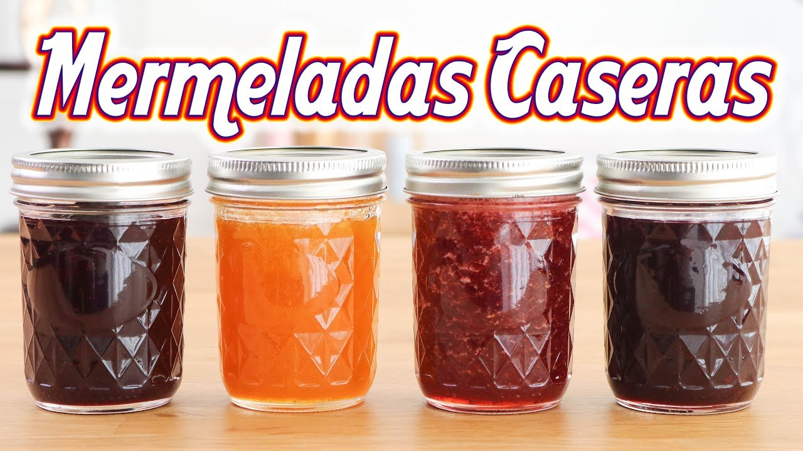
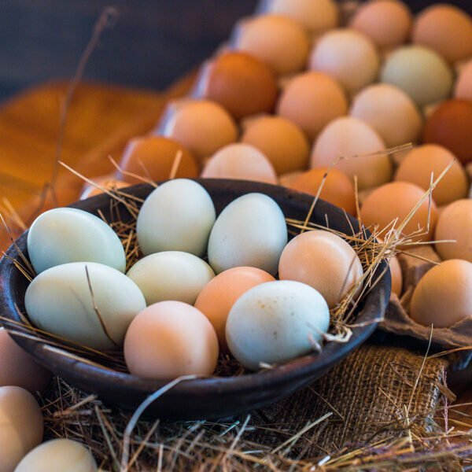
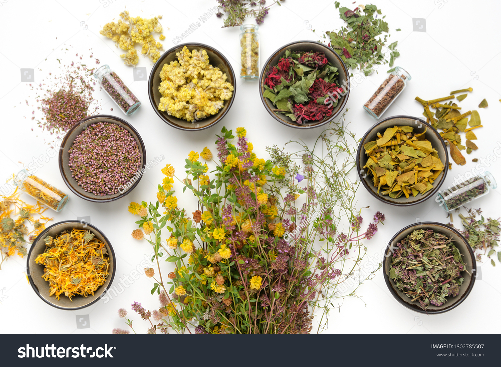

Productos de La Rinconada de Pijal
Llévate un pedacito del campo a casa con nuestros productos naturales y artesanales.
Mermeladas Artesanales
Deliciosas mermeladas hechas con frutas frescas de nuestra granja: mora, frutilla, uvilla y más.
Queso Fresco Campesino
Queso elaborado artesanalmente con leche fresca de nuestras vacas, sin aditivos.
Huevos Orgánicos
Huevos frescos recolectados diariamente de gallinas criadas en libertad.
Miel de Abeja Pura
Miel 100% natural, cosechada con técnicas tradicionales, sin procesos industriales.
Hierbas Medicinales Secas
Manzanilla, cedrón, menta y más. Secadas al sol, listas para preparar infusiones.